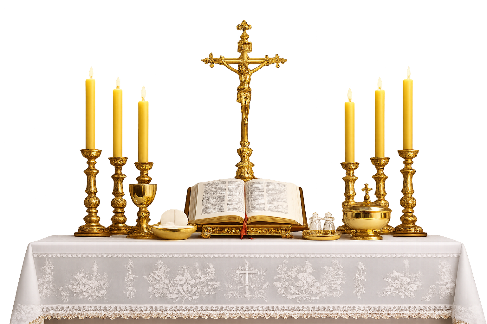

Introdução
A liturgia é a expressão pública da fé cristã, manifestada através de ritos e cerimônias que envolvem a participação ativa dos fiéis. Ela é uma parte fundamental da vida religiosa, proporcionando um espaço para a adoração, a reflexão e a comunhão entre os membros da comunidade. A liturgia é composta por diversos elementos, como orações, cânticos, leituras bíblicas e ritos específicos que variam de acordo com as tradições e denominações cristãs.
Estrutura da Santa Missa
A Santa Missa é a celebração mais importante da Igreja Católica. Nela, os fiéis se reúnem para louvar a Deus, ouvir Sua Palavra e participar do Sacrifício Eucarístico instituído por Jesus Cristo na Última Ceia. Por meio da Missa, os cristãos renovam sua fé e fortalecem sua comunhão com Deus e com a Igreja.
Para que a celebração aconteça de forma ordenada e significativa, a Missa é dividida em cinco grandes partes, cada uma com sua própria finalidade e importância.
Elas são:
Ritos Iniciais – reúnem os fiéis e os preparam para participar da celebração.
Liturgia da Palavra – momento em que Deus fala ao seu povo por meio das leituras bíblicas e do Evangelho.
Liturgia Eucarística – centro da Missa, onde o pão e o vinho são oferecidos e consagrados, tornando-se o Corpo e o Sangue de Cristo.
Rito da Comunhão – preparação e recepção da Sagrada Comunhão pelos fiéis.
Ritos Finais – conclusão da celebração e envio dos cristãos para viverem o Evangelho no mundo.
Compreender a estrutura da Santa Missa é aprofundar o conhecimento sobre a fé católica e participar da celebração de forma mais consciente. Cada parte possui um significado especial e conduz os fiéis a um encontro mais íntimo com Cristo, fortalecendo a vida espiritual e a comunhão com a Igreja.
